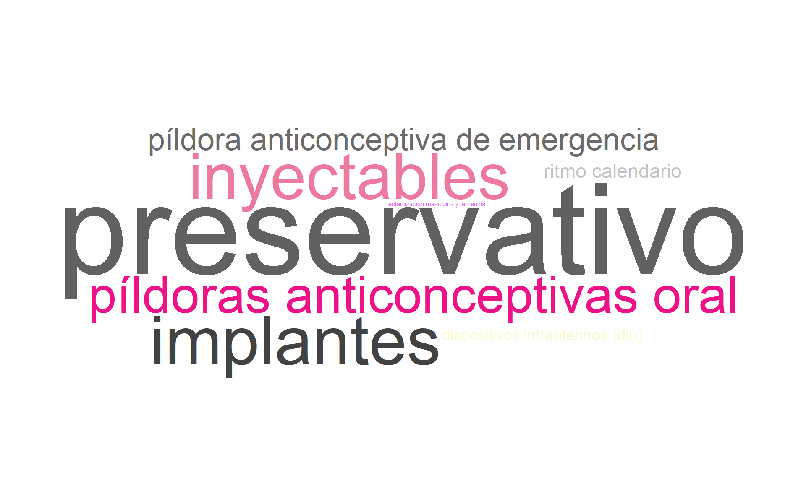

6 Sección 3. Salud integral
Aclaración importante
En los gráficos y filtros, Bogotá aparecerá con tilde y Cúcuta aparecerá como Cucuta.
6.1 Sección. Salud integral
6.2 Alimentación
6.2.1 ¿Cuántas veces come al día?
Descripción para todos los campus
La mayoría de los estudiantes (75.8%) reporta consumir alimentos entre 3 y 5 veces al día. Un 18.6% lo hace entre 1 y 2 veces al día, y un 5.6% consume alimentos más de 5 veces al día. En conjunto, la distribución muestra un predominio de frecuencias intermedias de alimentación.
6.2.2 ¿Cuántas veces por semana consumen los siguientes alimentos en su hogar? (carne, pollo, pavo, res, cordero, cerdo, conejo, pescado o huevos, etc)
Descripción para todos los campus
El consumo de proteína animal entre los estudiantes muestra que el 32.0% la consume todos los días. Le siguen el 27.5% que lo hace entre 3 y 5 veces por semana y el 26.1% que la consume casi todos los días, de modo que el 58.1% presenta una frecuencia alta de consumo.
En menor proporción, el 13.4% la consume entre 1 y 2 veces por semana, mientras que solo el 1.0% manifiesta no consumirla o hacerlo rara vez.
6.2.3 ¿Cuántas veces por semana consumen los siguientes alimentos en su hogar? Cereales (avena, granola), frutos secos (almendras, maní) o legumbres (fríjoles, garbanzos, lentejas)
Descripción para todos los campus
El 30.2% de los estudiantes consume cereales, frutos secos o legumbres entre 1 y 2 veces por semana, y un 29.5% lo hace entre 3 y 5 veces por semana. Además, el 21.3% reporta consumirlos casi todos los días y el 12.5% todos los días, mientras que el 6.5% indica no consumirlos o hacerlo rara vez.
En conjunto, la distribución se concentra en frecuencias semanales intermedias.
6.3 Actividad laboral de los padres y trabajo del estudiante
6.3.1 Señale aquella labor que sea más similar al trabajo que realizó su padre durante la mayor parte del último año.
Descripción para todos los campus
La ocupación del padre presenta una distribución diversa, aunque con predominio de algunas categorías específicas. La más frecuente corresponde al trabajo profesional (por ejemplo, médico, abogado o ingeniero), con 14.3%. Le siguen quienes son dueños de un negocio mediano con empleados (10.6%), y las respuestas no aplica (10.2%) y no sabe (10.0%).
También se observan proporciones relevantes en el trabajo por cuenta propia (9.6%) y en quienes son dueños de un negocio pequeño (9.3%). Los operarios de máquinas o conductores representan el 7.1% y los pensionados el 6.4%. Las demás ocupaciones presentan participaciones individuales iguales o inferiores al 5.1%.
6.3.2 Señale aquella labor que sea más similar al trabajo que realizó su madre durante la mayor parte del último año.
Descripción para todos los campus
La ocupación de la madre se concentra principalmente en el trabajo en el hogar, no trabajar o estudiar, con 24.8%. Le siguen las madres que se desempeñan en trabajo profesional con 19.5%, y quienes realizan trabajo auxiliar o administrativo con 10.7%.
También se registran participaciones relevantes en las dueñas de negocio pequeño (10.0%), en las respuestas no aplica (6.0%) y en quienes son vendedoras o trabajan en atención al público (5.7%). La categoría no sabe representa el 5.1%.
Las demás ocupaciones presentan proporciones individuales inferiores al 4.0%.
6.3.3 ¿Cuáles de los siguientes bienes hay en su hogar?
Descripción para todos los campus
En esta nube de palabras destacan términos como “horno”, “nevera”, “lavadora”, “máquina”, “ropa” y “computador”, lo que indica que estos bienes aparecen con alta frecuencia en los hogares reportados. También sobresalen “gas”, “microondas”, “motocicleta” y “automóvil”, así como artículos de entretenimiento como “consola”, “nintendo”, “play station” y “xbox”, aunque con menor frecuencia relativa.
En conjunto, la visualización muestra disponibilidad de bienes básicos, de movilidad y de ocio.
6.3.4 ¿Cuántas horas remuneradas trabajó usted la semana pasada?
Descripción para todos los campus
El 40.6% de los estudiantes reporta 0 horas de trabajo remunerado en la semana anterior, mientras que el 24.9% indicó “No aplica”. Además, el 12.1% trabajó menos de 10 horas, el 8.5% más de 30 horas, el 7.1% entre 21 y 30 horas y el 6.8% entre 11 y 20 horas.
La distribución evidencia que las categorías de no vinculación laboral o ausencia de horas remuneradas concentran la mayor proporción de respuestas.
6.3.5 ¿Usted recibe algún tipo de remuneración por trabajar?
Descripción para todos los campus
El 63.8% de los estudiantes no recibe remuneración laboral, mientras que el 33.9% reporta recibir pago en efectivo. Las formas menos frecuentes corresponden a la remuneración en efectivo y especie (1.4%) y solo en especie (0.8%).
6.3.6 Con respecto al año pasado, la situación económica de su hogar es:
Descripción para todos los campus
El 51.2% de los estudiantes considera que la situación económica de su hogar se mantiene igual respecto al año anterior. Un 44.1% percibe una mejoría, mientras que el 4.7% considera que ha empeorado. En conjunto, predominan las respuestas de estabilidad y mejora.
6.4 Sustanacias psicoactivas
6.4.1 ¿Consume algún tipo de sustancia psicoactiva?
Descripción para todos los campus
El 99.2% de los estudiantes reporta no haber consumido sustancias psicoactivas, mientras que el 0.8% reconoce consumo. La distribución muestra una frecuencia de reporte muy baja para este comportamiento en la muestra analizada.
6.4.2 ¿Cuál fue la edad de inicio de consumo de sustancias psicoactivas?
Descripción para todos los campus
Entre los estudiantes con registro de edad de inicio de consumo de sustancias psicoactivas (n = 6), el 50.0% señala haber iniciado entre 17 y 19 años, el 33.3% antes de los 13 años y el 16.7% entre 14 y 16 años.
6.4.3 ¿Qué tipo de sustancia psicoactiva consume?
Descripción para todos los campus
Entre los estudiantes con registro sobre tipo de sustancia psicoactiva, no se observa una única categoría predominante: el 33.3% reporta cannabis (marihuana) y otro 33.3% indica otras sustancias. El 33.4% restante se distribuye entre respuestas combinadas de sustancias, con 16.7% en cannabis, cocaína y otras y 16.7% en LSD y anfetaminas.
6.4.4 ¿Ha recibido orientación o ayuda profesional o especializada para superar la situación del consumo de sustancias psicoactivas y mitigar los riesgos y daños asociados al mismo?
Descripción para todos los campus
Entre los estudiantes con respuesta válida a este ítem, el 66.7% indica que no ha recibido orientación o ayuda profesional o especializada, mientras que el 33.3% reporta que sí la ha recibido.
6.4.5 Tipo de ayuda recibido para superar el consumo de sustancias psicoactivas
Descripción para todos los campus
El registro del tipo de ayuda recibida para superar el consumo de sustancias psicoactivas no muestra una categoría predominante. Cada respuesta válida representa el 16.7% de los casos e incluye menciones como Psicología, Consejos al respecto, No, Ningun y respuestas puntuales abiertas como “.” y “…”.
6.5 Consumo de Cigarrillo: Hábitos y Motivaciones
6.5.1 ¿Usted fuma cigarrillo?
Descripción para todos los campus
El 98.5% de los estudiantes indica que no fuma cigarrillo, mientras que el 1.5% afirma que sí lo hace. La distribución muestra una baja frecuencia de consumo reportado en la muestra.
6.5.2 Edad en la que empezó a fumar
Descripción para todos los campus
Entre quienes reportan edad de inicio de consumo de cigarrillo, la edad más frecuente es 16 años (36.4%). Le siguen los 15 años (18.2%) y los 17 años (18.2%), mientras que las edades de 8, 21 y 22 años representan cada una el 9.1% de los casos.
6.5.3 ¿Cuál fue el motivo por el cual probó por primera vez el cigarrillo?
Descripción para todos los campus
El motivo más frecuente por el que los estudiantes probaron cigarrillos fue la curiosidad o iniciativa propia (45.5%). Le siguen la imitación de conducta familiar (18.2%) y los sentimientos de tristeza o aburrimiento (18.2%), mientras que la presión social y otras razones representan cada una el 9.1%.
6.5.4 ¿Cuántos cigarrillos fuma diariamente?
Descripción para todos los campus
El 72.7% de los estudiantes que reportó fumar consume entre 1 y 2 cigarrillos al día, mientras que el 27.3% consume entre 3 y 5 cigarrillos diarios. Predomina, por tanto, un nivel de consumo diario bajo.
6.6 Hábitos con el alcohol
6.6.1 ¿Usted consume alcohol normalmente?
Descripción para todos los campus
La mayoría de los estudiantes encuestados manifestó no consumir alcohol, representando el 93.2% del total. El 6.8% reportó que sí lo consume. La distribución muestra una baja proporción de consumo reportado en la muestra evaluada.
6.6.2 Edad de inicio del consumo de alcohol por primera vez
Descripción para todos los campus
El inicio del consumo de alcohol se concentra principalmente en la adolescencia. La edad más frecuente es 17 años (24.5%), seguida por 18 años (22.4%) y 16 años (20.4%). En menor proporción aparecen los 15 años (12.2%) y 14 años (8.2%). Los demás casos corresponden a edades dispersas, con participaciones individuales del 2.0%.
6.6.3 ¿Cuál fue el motivo por el cual probó por primera vez el alcohol?
Descripción para todos los campus
El 67.3% de los estudiantes que han probado alcohol indicó que lo hizo por curiosidad o iniciativa propia. Un 20.4% mencionó otras razones y el 12.2% señaló imitación de conducta familiar.
6.6.4 ¿Cuántas veces a la semana ingiere alcohol?
Descripción para todos los campus
Entre quienes consumen alcohol, el 100.0% reporta hacerlo solo en el fin de semana. El patrón observado es, por tanto, ocasional y concentrado en ese periodo.
6.6.5 Ocasiones en las cuales consume alcohol
Descripción para todos los campus
La nube de palabras evidencia que el consumo de alcohol se asocia principalmente con “amigos”, “actividad” y “social”, términos que aparecen con mayor tamaño y frecuencia. También se destacan “familiar” y “reunión”, lo que ubica este comportamiento en contextos compartidos y de interacción grupal.
6.7 Vida sexual
6.7.1 A qué edad inició su vida sexual
Descripción para todos los campus
El 42.6% de los estudiantes reporta haber iniciado su vida sexual entre los 14 y 17 años, mientras que el 35.6% indica que no la ha iniciado. Por su parte, el 19.3% señala haber iniciado entre los 18 y 21 años. Los casos de inicio a partir de los 22 años (1.4%) y antes de los 13 años (1.1%) son minoritarios.
6.7.2 ¿Ha utilizado alguna vez métodos anticonceptivos?
Descripción para todos los campus
El 80.1% de los estudiantes encuestados indicó haber utilizado métodos anticonceptivos, frente al 19.9% que reportó no haberlos utilizado.
6.7.3 Metódos anticonpcetivos usados
Descripción para todos los campus
La nube de palabras muestra que el método anticonceptivo predominante es el preservativo, con amplia diferencia frente a las demás opciones. En un segundo nivel aparecen las píldoras anticonceptivas orales, los inyectables y los implantes, seguidos por la píldora anticonceptiva de emergencia. Con menor frecuencia se mencionan el dispositivo intrauterino (DIU), el ritmo calendario y la esterilización masculina o femenina.

6.7.4 ¿De acuerdo con la definición de identidad de género, usted como se identifica?
Descripción para todos los campus
La distribución de identidad de género muestra que el 50.5% de los estudiantes se identifica como mujer cisgénero y el 32.8% como hombre cisgénero, mientras que el 16.2% indicó no desear responder. Las categorías hombre transgénero y mujer transgénero representan cada una el 0.2%.
6.7.5 ¿Cuál es su orientación sexual?
Descripción para todos los campus
La orientación sexual predominante es la heterosexual (91.8%), seguida por la bisexual (4.0%) y la homosexual (2.6%). Otras orientaciones como otra (0.7%), asexual (0.6%) y pansexual (0.3%) presentan participaciones marginales.
6.8 Aspectos religiosos
6.8.1 ¿Con cuál religión o creencia religiosa se identifica actualmente?
Note
A nivel religioso es predominante la católica (62.6%), seguida por el grupo de cristianos no católicos (17.1%). En menor proporción se encuentran quienes prefieren no responder (6.0%), quienes se declaran creyentes sin afiliación religiosa (5.7%) y quienes indican no tener religión (4.6%). Las demás categorías presentan participaciones inferiores al 3.0%.
6.9 Estado de salud
6.9.1 ¿Padece de alguna enfermedad diagnosticada que requiere tratamiento actualmente?
Descripción para todos los campus
El 6.3% de los estudiantes reportó tener alguna enfermedad diagnosticada que requiere tratamiento actualmente, mientras que el 93.7% indicó no presentar esta condición.
6.9.2 Indique si toma medicamentos como tratamiento de la enfermedad diagnosticada
Descripción para todos los campus
Entre quienes registran respuesta válida en este ítem, el 77.8% reporta que sí toma medicamentos como tratamiento de la enfermedad diagnosticada, mientras que el 22.2% indica que no los toma.
6.10 Discapacidad
6.10.1 Tiene alguna discapacidad
Descripción para todos los campus
El 8.6% de los encuestados reportó tener algún tipo de discapacidad, mientras que el 91.4% indicó no tener ninguna.
6.10.2 ¿Qué tipo de discapacidad posee?
Descripción para todos los campus
Entre los estudiantes que reportan discapacidad, el tipo más frecuente es la visual baja visión irreversible (53.2%), seguido por la psicosocial (mental) (16.1%) y la visual ceguera (14.5%). También se registran la física (8.1%) y el trastorno del espectro autista (4.8%). En menor proporción aparecen la auditiva usuario del castellano (1.6%) y la intelectual (1.6%).